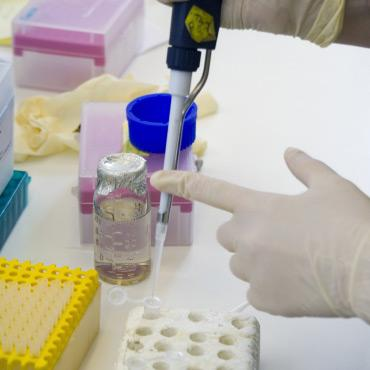
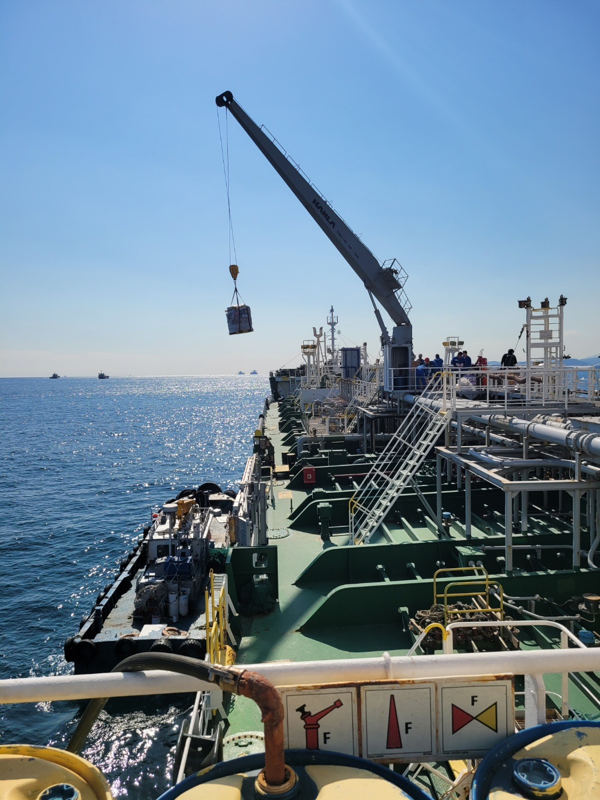
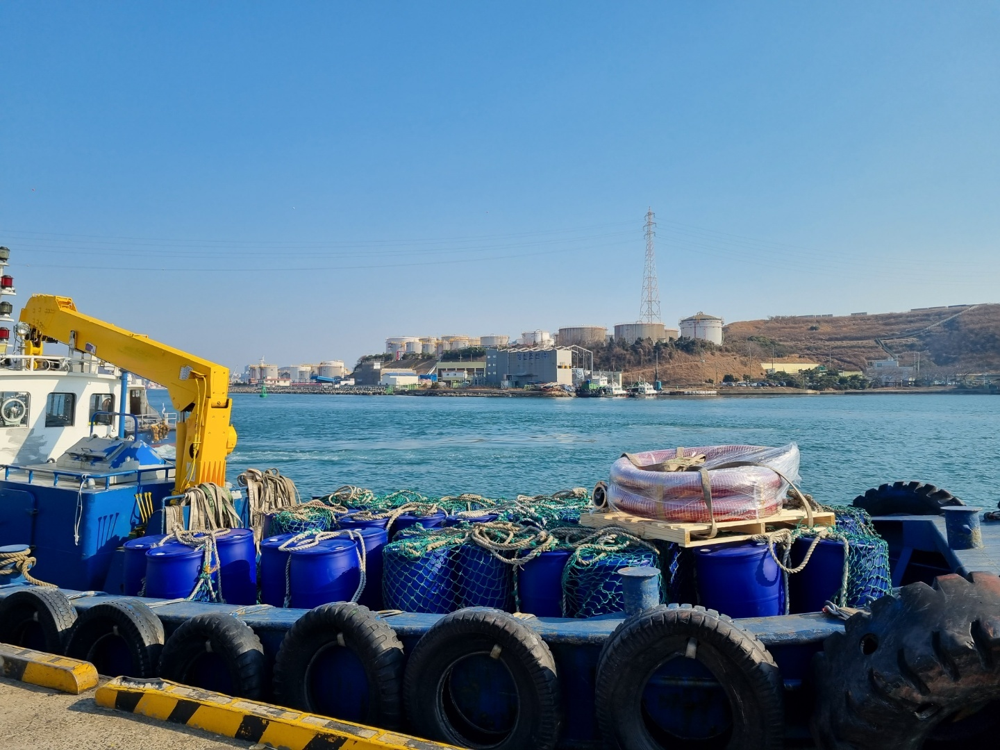
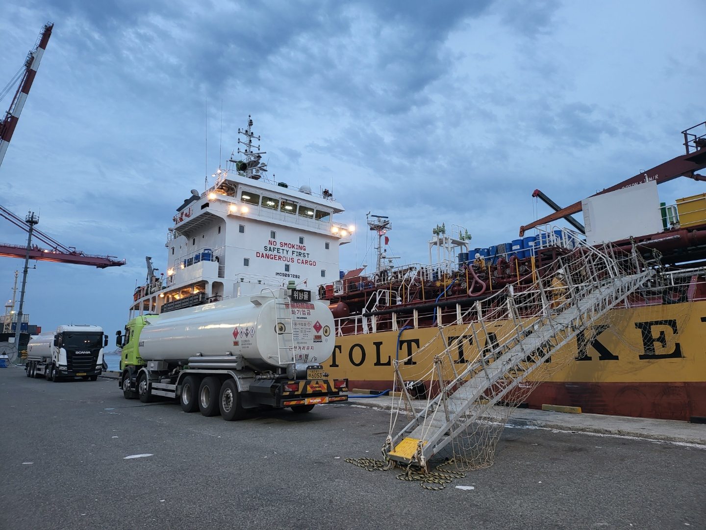
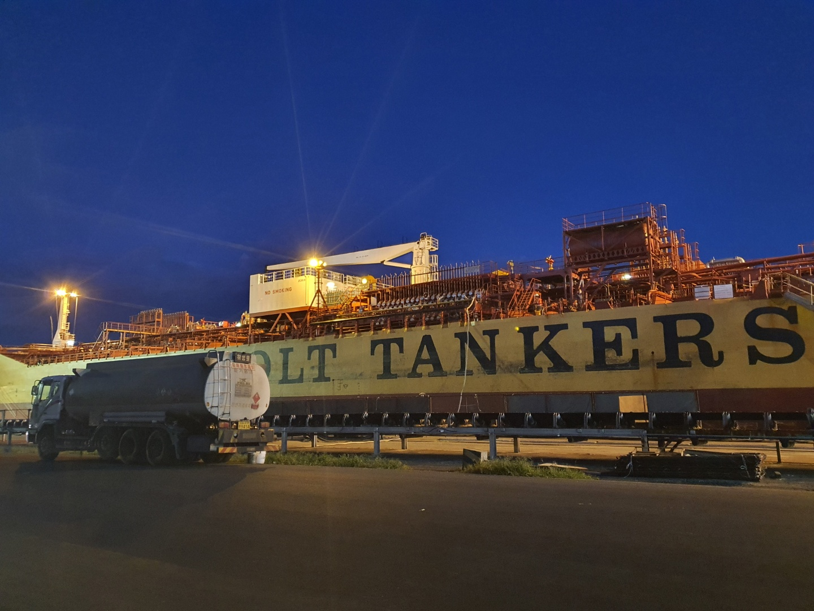

MARINE CHEMICAL SUPPLY
케미칼 선박에 필요한 제품을
케미칼 선박에 필요한 제품을
안전하게 공급합니다
선박 공급 경험을 바탕으로 기초 시약과 시험 기자재부터 포장 및 벌크 화학제품까지 공급합니다.
SUPPLY SERVICE
케미칼 선박 공급
선박 현장과 공급 형태에 맞춰 필요한 시약, 기자재 및 화학제품을 제공합니다.
WWT TEST KIT
WWT용 시약 및 기자재
선박 탱크 검사에 필요한 기초 시약과 시험 기자재를 안내합니다.

WORKS ON SITE
포장 제품 공급 작업사진
다양한 포장 형태의 유·무기 화학제품을 선박 현장에 공급하는 작업입니다.


WORKS ON SITE
탱크로리 공급 작업사진
선박 현장에서 진행한 탱크로리 공급 작업입니다.


선박 공급에 대한 폭넓은 경험을 바탕으로 안전하게 공급하고 있습니다.
납품 문의→